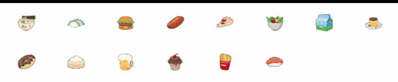

在项目中引入本地图片作为图标的时候，总需要查找文件路径，有时../../需要写很长，就显得很不专业也不方便，如果能像element-ui那样直接<el-icon name="icon-file-name"></el-icon>就好了:D
需求

首先能像element-ui一样简单以组件的方式引入图标，其次能向上图一样列出svg图库，鼠标点击就能够复制该图标使用的代码，如下：
1
| <svg-icon :icon-class="18"/>
|
svg雪碧图
网上搜寻了一圈，一个简单的解决方案是——svg雪碧图。它的工作原理是: 利用svg的symbol元素，将每个icon包括在symbol中，通过use元素使用该symbol.
这里简单一点的解释就是，最终你的svg icon会变成下面这个样子的 svg 雪碧图:
1
2
3
4
| <svg xmlns="http://www.w3.org/2000/svg" xmlns:xlink="http://www.w3.org/1999/xlink" id="__SVG_SPRITE_NODE__">
<symbol class="icon" viewBox="0 0 1024 1024" id="icon名">{{省略的icon path}}</symbol>
<symbol class="icon" viewBox="0 0 1024 1024" id="icon名">{{省略的icon path}}</symbol>
</svg>
|
你的每一个icon都对应着一个symbol元素。然后在你的html中，引入这样的svg, 随后通过use在任何你需要icon的地方指向symbol:
1
| <use xlink:href="#symbolId"></use>
|
这个过程中，我们可以把symbol理解为sketch中内置的图形，当你需要使用的时候，把这个形状”拖拽”到你的画板中就行了。而use就是这个过程中的”拖拽”行为。
准备工作
下载svg图片，这里是在阿里图标库中下载的
阿里图标库
安装插件：svg-sprite-loader
安装插件：v-clipboard
开始
先从阿里图标库中下载一些svg图片，存放路径为/src/icons/svg,然后在 webpack.base.conf.js 文件中添加 rules 配置
1
2
3
4
5
6
7
8
9
|
{
test: /\.svg$/,
loader: "svg-sprite-loader",
include: [path.resolve(__dirname, '../src/icons/svg')],
}
|
然后修改 url-loader 配置
1
2
3
4
5
6
7
8
9
10
11
12
|
{
test: /\.(png|jpe?g|gif|svg)(\?.*)?$/,
loader: "url-loader",
exclude: [
path.resolve(__dirname, '../src/icons/svg'),
],
options: {
limit: 10000,
name: utils.assetsPath("img/[name].[hash:7].[ext]")
}
}
|
这样配置的目的就是为了让svg-sprite-loader只处理我们想要处理的svg文件，这些文件存放于指定的文件夹下。
创建 vue 组件 svg-icon
1
2
3
4
5
6
7
8
9
10
11
12
13
14
15
16
17
18
19
20
21
22
23
24
25
26
27
28
29
30
31
32
33
34
35
36
37
38
39
40
41
42
43
| <!-- @/components/SvgIcon -->
<template>
<svg :class="svgClass" aria-hidden="true">
<use :xlink:href="iconName"></use>
</svg>
</template>
<script>
export default {
name: 'svg-icon',
props: {
iconClass: { type: String, required: true },
className: { type: String }
},
computed: {
iconName () {
return `#${this.iconClass}`
},
svgClass () {
if (this.className) {
return 'svg-icon ' + this.className
} else {
return 'svg-icon'
}
}
}
}
</script>
<style scoped>
.svg-icon {
width: 20em;
height: 20em;
vertical-align: -0.15em;
fill: currentColor;
overflow: hidden;
}
</style>
|
在svg文件目录/src/icons里新建index.js文件,文件路径为/src/icons/index.js
1
2
3
4
5
6
7
8
9
10
11
12
13
14
15
|
import Vue from 'vue'
import SvgIcon from '@/components/SvgIcon'
Vue.component('svg-icon', SvgIcon)
const requireAll = requireContext => requireContext.keys().map(requireContext)
const req = require.context('./svg', false, /\.svg$/)
requireAll(req)
|
在main.js中引入
1
| import './src/icons/index.js'
|
这样就能在vue中使用了 具体格式如下
1
| <svg-icon icon-class="svg文件名"/>
|
项目中svg图标快捷使用
到此为止，已经能够实现svg图标当作组件使用了，接下来实现片头动画效果，即点击某个svg图标就得到该图标在项目中使用的代码，这就需要用到插件v-clipboard了
在main.js中引入
1
2
3
|
import Clipboard from 'v-clipboard';
Vue.use(Clipboard)
|
新建要展示svg图库的页面SvgChoose.vue
1
2
3
4
5
6
7
8
9
10
11
12
13
14
15
16
17
18
19
20
21
22
23
24
25
26
27
28
29
30
31
32
33
34
35
36
37
38
39
40
41
42
43
44
45
46
47
48
49
50
51
52
53
54
55
56
57
58
59
60
61
62
63
64
65
66
67
68
69
70
71
72
73
74
75
76
77
78
| <template>
<section class="svg-area">
<div class="container">
<el-row :gutter="20">
<el-col
v-clipboard="`<svg-icon :icon-class="${index + 1}"/>`"
v-clipboard:success="clipboardSuccessHandler"
v-clipboard:error="clipboardErrorHandler"
:span="2"
v-for="(item, index) in 20"
:key="index"
class="single flex-ac flex-pc"
>
<svg-icon :icon-class="index + 1 + ''" />
</el-col>
</el-row>
</div>
</section>
</template>
<script>
export default {
data() {
return {};
},
created() {},
methods: {
clipboardSuccessHandler({ value, event }) {
console.log('success', value);
this.$message.success('代码复制成功，前往粘贴');
},
clipboardErrorHandler({ value, event }) {
console.log('error', value);
},
},
components: {},
};
</script>
<style lang="less" scoped>
.svg-area {
.el-row {
margin-bottom: 20px;
&:last-child {
margin-bottom: 0;
}
}
.el-col {
border-radius: 4px;
}
.bg-purple-dark {
background: #99a9bf;
}
.bg-purple {
background: #d3dce6;
}
.bg-purple-light {
background: #e5e9f2;
}
.grid-content {
border-radius: 4px;
min-height: 36px;
}
.row-bg {
padding: 10px 0;
background-color: #f9fafc;
}
.single {
cursor: pointer;
height: 40em;
&:hover {
background: #f0f0f0;
}
}
}
</style>
|
上述文件使用需要事先准备一些svg图片，命名从1.svg开始递增，项目中还需要引入element-ui达到整体布局和点击弹框。
参考